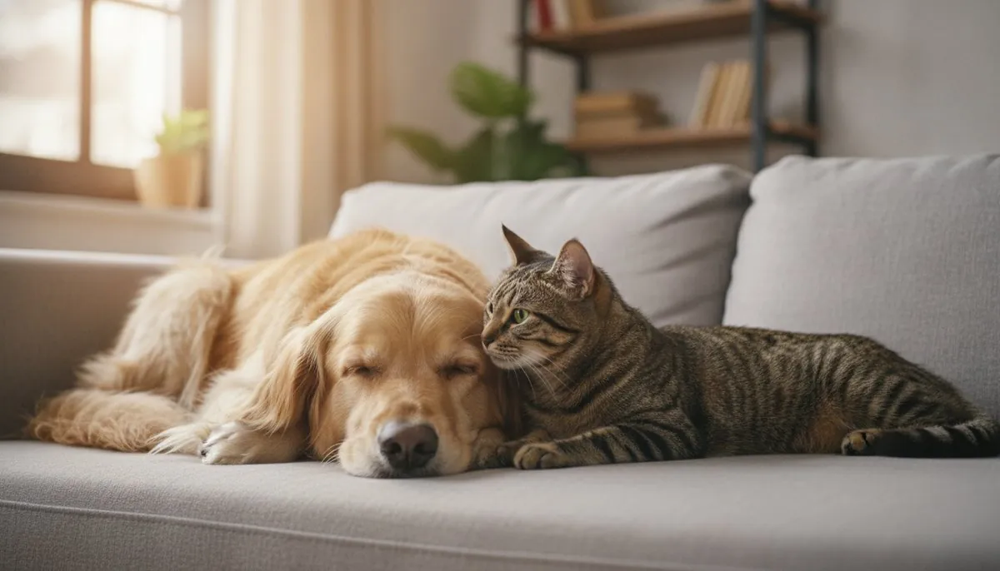
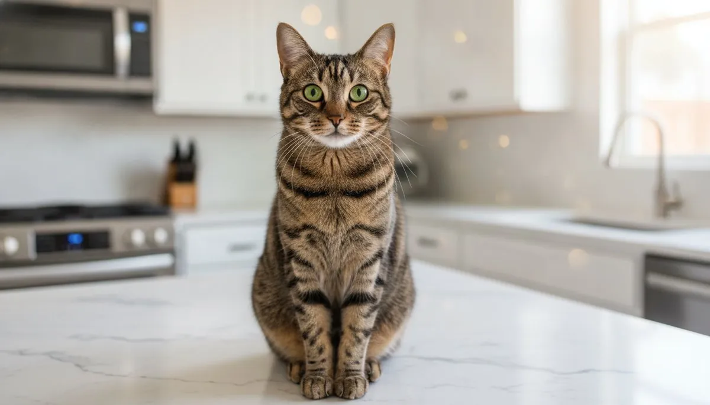
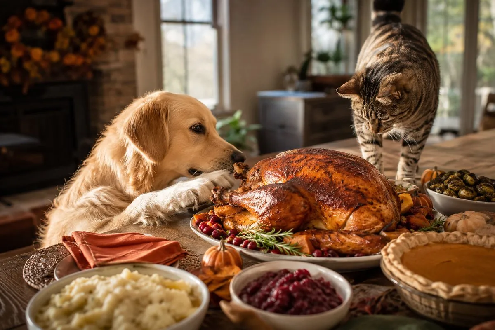

Living together
Do Dogs and Cats Get Along?
The cat-and-dog rivalry is mostly a myth — what really decides whether they bond, and how to introduce them the right way.
Read →
Breeds
The 10 Best Dog Breeds for Apartments
No yard needed — 10 quiet, adaptable breeds that thrive in small spaces, the ones to avoid, and the surprising couch-potato giant.
Read →
Breeds
The Best Dog Breeds for Kids & Families
10 family-friendly breeds, which to avoid with toddlers, and how to introduce a new dog.
Read →
Safety
Foods Toxic to Dogs
The everyday foods that are dangerous — and what to do if your dog gets into them.
Read →
Safety
Safe Fruits & Veggies for Dogs
The produce dogs CAN enjoy — with safe amounts and prep tips.
Read →
Safety
Foods Cats Should Never Eat
The kitchen items that are dangerous for cats — and the signs to watch.
Read →
Seasonal
Thanksgiving Foods Dangerous for Pets
Holiday table hazards for dogs and cats — and the safe alternatives.
Read →